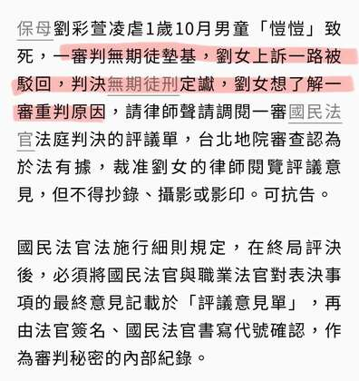

先说结论：无期徒刑已定谳。法院裁准的是受严格限制的「阅览」，不是撤销判决、重做事实审，也不是任何人可借此要求第四审。本文依公开报导与一般法律程序整理，不替任何一方预判后续声请结果。
无期定谳后声请阅览：法院准看，但没有松动哪一条界线？
《联合报》2026年9月17日报导指出，刘彩萱因凌虐1岁10个月男童「剀剀」致死，一审由国民法官法庭判处无期徒刑；其后上诉均遭驳回，判决于2026年7月23日确定。
报导称，三名一审辩护人其后声请阅览评议意见单。台北地院以裁判确定后，当事人、辩护人或辅佐人得依法声请阅览为由，裁准在指定处所阅览；但不得抄录、摄影或影印，且可直接或间接识别国民法官身分的资讯不得提供。该裁定仍可抗告。
这项裁定处理的是阅览范围与保密限制，并未重启有罪判断或既已确定的刑度。

程序时间线：定谳之后，法院处理的是「阅览」申请
一审国民法官法庭判处无期徒刑。
2026.07.23二、三审驳回上诉，直接照顾者案件确定。
2026.09.17 报导辩护人声请阅览一审评议意见，法院裁准在指定处所阅览。
这条时间线的关键是：终局判决已确定；后续裁定处理的是「谁可在何种限制下看见评议意见」，不是重新判断有罪或刑度。
看得到，不等于拿得到：本次裁定决定了什么？
依使用者提供的2026年9月17日《联合报》报导，刘彩萱的一审辩护人获准在法院指定处所阅览国民法官评议意见；不得抄录、摄影或影印；足以直接或间接识别国民法官身分的资讯，仍受保密限制。报导并指裁定得抗告。
可以在法院指定处所，理解最终表决意见的制度性纪录。
不可以复制、拍摄、影印或公开足以辨识国民法官的资讯。
不等于撤销有罪判断、重开通常事实审，或使已定谳刑度当然失效。
法律精解：评议意见不是翻案通行证
阅览权与救济权，是两件不同的事。本案裁定让辩护人得在法院指定处所查看最终评决意见的制度性纪录；同时以不得抄录、摄影、影印及遮蔽可识别国民法官资讯，守住评议秘密与人身安全。它不会把评议内容变成可任意复制、公开或作为舆论动员的材料。
以下是程序上的合理推论，不是对辩护策略或事实基础的断言。阅览可能用来核对一审重判理由的脉络、评估是否有可具体化的法律争点，或让当事人理解判决形成的最后步骤。但真正的分水岭不在「看到了什么」，而在能否提出法律要求的特定事由与可验证材料；没有这一步，阅览本身不会改变确定判决。
不是一张评议单，就能重开事实审
再审须符合法定事由，例如足以动摇原确定判决基础的新事实、新证据等；重点是具体材料，而非单纯不同意判决。
非常上诉聚焦确定裁判有无违背法令等重大法律问题；属非常救济，不是当事人可自行追加的一般上诉。
宪法救济检视是否有特定宪法权利争议及受理要件；不以重做证据取舍为通常功能。
因此，评议意见的阅览最多可能提供研究线索，不能取代再审、非常上诉或宪法救济各自的法定门槛。是否提出正式声请、声请理由为何、法院如何处理，仍须以书状、裁定与司法机关公开资讯为准。
三审定谳后的成功翻转：共同点是证据基础被具体重验
死刑判决确定后，案件经再审重新检视自白、现场与补强证据，2012年无罪确定。可供理解的是：救济必须让原有罪基础承受具体、可检验的挑战。
死刑定谳后，案件重新调查、进行现场重建与鉴定，再审后于2017年无罪确定。重点不只是「案件受关注」，而是出现可重新评价的实证材料。
历经多次死刑判决与后续程序后，法院重新检视共同被告供述及物证连结，最终无罪。案例提醒：非常救济的高门槛，来自对确定判决安定性与错误修正之间的平衡。
有平反先例，不代表本案已有翻案条件
上述案件能否成立救济，取决于各自的证据、程序及法定要件。把它们列出，是为了说明制度曾如何运作，不是宣称本案已出现相同新证据、违法情形或任何足以重启审理的理由。
程序追踪之外，保护责任仍是核心
剀剀案引发的公共提问，不只关于判决结果，也关于托育、访视、通报与跨机关协作如何真正接住孩子。司法救济要依法律门槛严谨处理；制度检讨则应以可追责、可补强的保护网为目标。
保护网不该只回答“做了什么”，还要回答“能否验证”
改革不能只以会议、培训或表单数量衡量。要能检验的是：孩子是否被亲见，异常信号是否交叉验证，处置是否按时升级，每项决定是否留下可回溯记录。
风险不归零伤势、失联、改期、矛盾说法与家属求助应整合为同一时间线，避免不同单位各自丢失脉络。
升级有门槛加访、医疗确认、通报或安全安置，应有责任人、期限、复核者与未完成事项的追踪。
修正可验收事件后应说明信息在哪里中断、规则如何改、是否实际遵守；不能只公布新增多少表单或课程。
查核说明
- 使用者提供之《联合报》2026年9月17日报导：国民法官评议意见阅览裁定。
- 台湾高等检察署台中检察分署：如何声请再审？
- 平反案例采公开判决、司法新闻与平反纪录概略整理；本文不将其与本案直接类比。